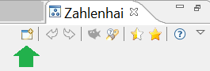

)
gedrückt wurde.
)
gedrückt wurde.Wer mehr über Teiler von Zahlen und Primzahlen lernen will, der sollte das Zahlenhai-Spiel spielen. Aber auch wer einfach knobeln will, was die besten Züge sind, wird seinen Spaß haben.
Dieses Tutorial basiert auf einem Zahlenfeld (Spielfeld) von 1 bis 20 (die Größe des Spielfelds kann man einstellen, wenn man das Spiel neu startet).
Das Spiel scheint für ein kleines Zahlenfeld einfach zu sein, es ist allerdings eine große Herausforderung für ein großes Zahlenfeld.
Die Spielidee besteht darin, möglichst viele Zahlen aus einem gegebenen Zahlenfeld zu gewinnen und dabei deren Summe zu maximieren. Wenn deine Summe der gewonnenen Zahlen (dein Score) größer ist als die Summe der Zahlen des Zahlenhais, hast du gewonnen. Als Zweites kann man versuchen, möglichst nahe an die Summe zu kommen, die man maximal für das gegebene Zahlenfeld erreichen kann. Statt "maximale Summe" sagt man auch "optimales Ergebnis".
Hat man eine beliebige Zahl ausgewählt, so frisst der Zahlenhai alle echten Teiler dieser Zahl (z.B. sind alle echten Teiler von 6 die Zahlen 1, 2 und 3, aber nicht die Zahl 6 selbst). Hat die Zahl keine echten, freien Teiler mehr, frisst er deine ausgewählte Zahl selbst. Der Zahlenhai bekommt also in jeder Runde etwas zu fressen.
Das Spiel endet, wenn alle Zahlen verbraucht sind, d.h. entweder von dir ausgewählt oder vom Zahlenhai gefressen wurden.
Das Spiel startet mit dem folgenden Fenster. Das Zahlenfeld ist in diesem Tutorial auf 20 gesetzt. Nun kannst du eine der Zahlen zwischen 1 und 20 auswählen (in der ersten Runden sind alle Zahlen "auswählbar" oder "frei").
Hier ein erster Tipp: Um ein optimales Ergebnis zu erzielen, musst du als erste Zahl immer die größte verfügbare Primzahl auswählen. Für das Zahlenfeld 1 bis 20 ist das die 19. Diese hat nur die 1 als echten Teiler. Du kannst nun die Zahl 19 im Zahlenfeld anklicken.
Als weiteren Tipp (aber nicht als feste Regel) kannst du versuchen, dass der Hai pro Zug von dir nicht mehr als 2 Zahlen zu fressen bekommt.

Nachdem du die 19 angewählt hast, frisst der Zahlenhai die 1. Außerdem werden die beiden Zahlen grau (statt blau) hinterlegt: Sie sind nun raus aus dem Spiel und nicht mehr aktiv oder frei.
In der detaillierten Spielverlaufstabelle (die untere Tabelle im letzten Bild) werden deine Züge dokumentiert: Darin stehen deine Zugnummer (Runde), deine ausgewählten Zahlen und dein aktueller Punktestand – und zum Zahlenhai wird angezeigt, welche Zahlen er fraß und sein aktueller Punktestand. Außerdem zeigt die letzte Spalte der Tabelle, wie viele Zahlen noch frei sind.
Darüber ist die Gruppierung "Spielstand", die den Status zusammenfasst: Dein Punktestand ist in grün dargestellt, die Punkte des Zahlenhais sind rot, da du mit dem aktuellen Stand vorne liegst. Zusätzlich gibt es noch die Information über die Summe, die man mindestens erreichen muss, um zu gewinnen.
Während des Spiels passiert es häufiger, dass einzelne Zahlen übrig bleiben, die keine freien Teiler mehr haben und selbst auch nicht Teiler für andere freie Zahlen sind. Diese Zahlen können nicht mehr zu deinem Punktekonto beitragen. In so einer Situation wird der Knopf "Haifutter" aktiv dargestellt. Durch Drücken des Knopfs werden diese Zahlen sofort aus dem Spiel genommen und zu dem Hai-Score hinzuaddiert (Futter für den Hai). Wir empfehlen, dies auch zu tun – man bekommt einfach einen besseren Überblick über die wirklich interessanten Zahlen. Das folgende Bild zeigt nun den Stand, nachdem der Knopf "Haifutter" ()
gedrückt wurde.

Nach dem ersten Zug sind die weiteren Züge etwas schwieriger. Du solltest versuchen, dem Zahlenhai so wenig Zahlen wie möglich übrig zu lassen – am besten nur einen Teiler, manchmal auch mehr. Aber wähle nicht nur kleine Zahlen aus, die nur einen Teiler haben, da diese unter Umständen als Teiler für größere Zahlen benötigt werden. Für den zweiten Zug ist es empfehlenswert,
15, 14 oder 10 [15=3*5, 14=2*7 oder 10=2*5]
zu wählen. Das folgende Bild zeigt nun den Stand des Spiels, nachdem 15 ausgewählt wurde.

Hinweise: Wenn du mit der Maus über ein aktives Feld, z.B. das der Zahl 10, fährst, wird dir ein Tooltip (Balloontext) angezeigt, der Hilfestellung leistet. Die Hilfestellung zeigt dir die noch verfügbaren, freien Teiler der Zahl 10 und auch, für welche anderen Zahlen die Zahl 10 selbst ein Teiler ist.
Für die 10 gibt es noch einen freien Teiler (2). Wir wählen die 10 als nächste Zahl aus (und holen damit 8 Punkte auf: 10-2=8). Damit führt der Hai nur noch 52:44 (+8) statt 50:34 (+16).

Du kannst noch mehr Hinweise bekommen, wenn du in der Toolbar auf den Knopf "Tipp"  klickst. Dort wird empfohlen, als nächstes die 20 anzuklicken. Wir folgen nun der Empfehlung und drücken "Ja". Einen Vorschlag gibt es nur für Zahlen, die zur optimalen Zugfolge führen; daher kommt in anderen Fällen keine Empfehlung und der Knopf ist deaktiviert.
klickst. Dort wird empfohlen, als nächstes die 20 anzuklicken. Wir folgen nun der Empfehlung und drücken "Ja". Einen Vorschlag gibt es nur für Zahlen, die zur optimalen Zugfolge führen; daher kommt in anderen Fällen keine Empfehlung und der Knopf ist deaktiviert.

Für die nächsten Züge kannst du z.B. die freien Zahlen in der Reihenfolge 16, 12 und 14 auswählen. Alle drei Zahlen haben nur noch einen Teiler, die aber alle unterschiedlich sind. Wenn du deine letzte Entscheidung (z.B. nach Drücken der 12) revidieren möchtest, kannst du in der Toolbar den Knopf "Zurück" benutzen.
Die Situation nach Auswahl von 14, 12 und 16 zeigt das folgende Bild.

Die letzten verbleibenden Zahlen sind nun die 18 und die 9. Bitte drücke die 18, dann geht die 9 an den Zahlenhai und das Spiel ist vorbei. Das folgende Bild zeigt den entsprechenden Dialog. Glückwunsch, du hast das Spiel gewonnen. Du hast sogar ein optimales Ergebnis erreicht.
Bemerkung: Du konntest die Zahlen 16, 14 und 12 in einer beliebigen Reihenfolge nehmen, die optimale Zugfolge ist also nicht eindeutig.
Der Dialog schlägt vor, den aktuellen Spielverlauf in einer Logdatei (.csv) zu speichern: Stimmst du zu, wird die Spielverlaufstabelle exportiert und kann später z.B. in Excel oder Calc geöffnet werden.

Wenn du ein neues Spiel starten willst, drücke einfach den Button "Neues Spiel" in der Mitte, oder die "Neustart"-Ikone in der Toolbar. Die Toolbar wird oben rechts im Zahlenhai-Hauptfenster und im folgenden Bild angezeigt (der grüne Pfeil zeigt auf die Neustart-Ikone).
